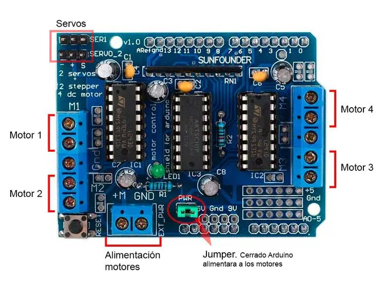
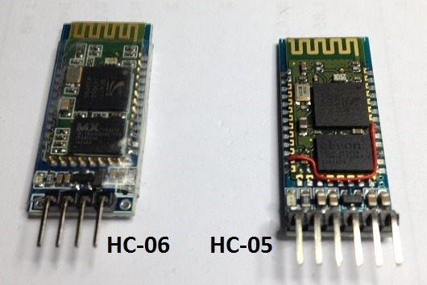

- Controlador de motores (L293D):
- Coloca el controlador en una protoboard.
- Conecta sus entradas a los pines digitales del Arduino (ejemplo: Input 1 al pin 7, Input 2 al pin 8).
- Asocia las salidas a los motores DC.
- 
- Módulo Bluetooth (HC-05/HC-06):
- Conecta los pines RX y TX del módulo a los pines digitales del Arduino (por ejemplo: RX al pin 10, TX al pin 11).
- Asegúrate de cruzar las conexiones (RX a TX y TX a RX).
- 
- Alimentación:
- Utiliza una batería de 9V para los motores y el Arduino.
- Revisa la polaridad para evitar daños a los componentes.